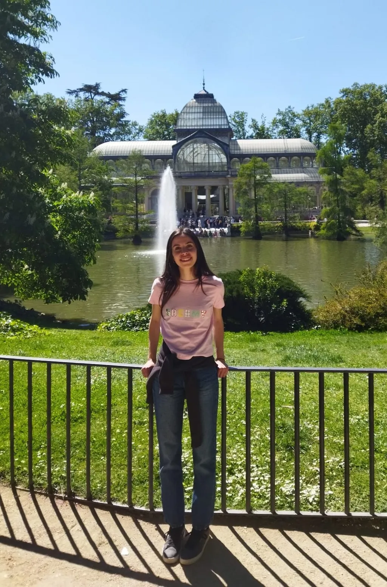
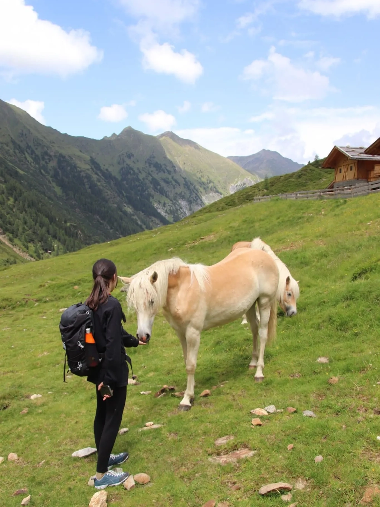
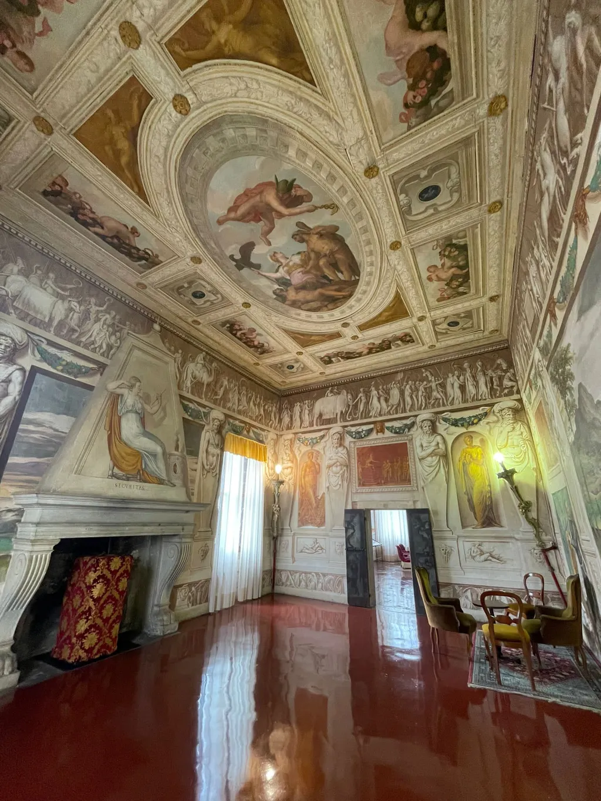
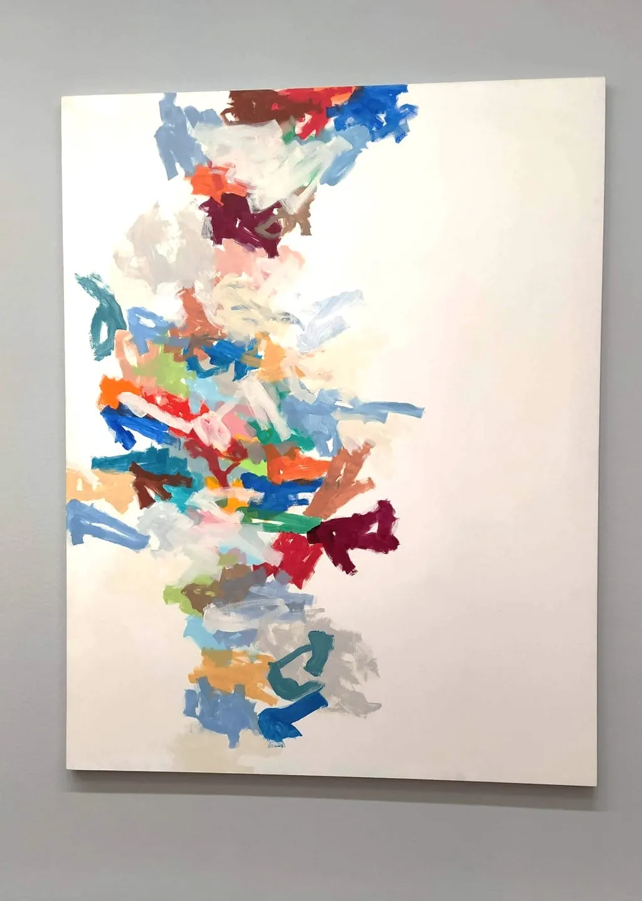
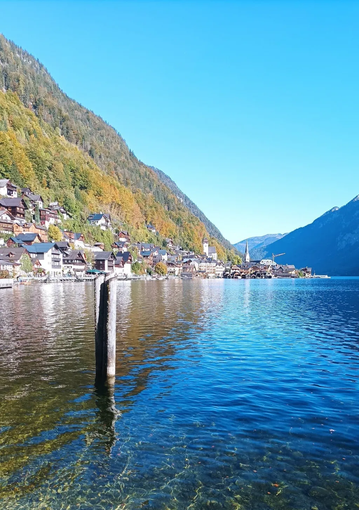

Hi, I'm Elena Romelli.
I'm a passionate UX/UI designer with a background in Human-Computer Interaction. I love crafting solutions based on user needs and challenges, aiming to enhance the overall experience and usability.
Beyond the digital world, I'm passionate about art, monuments, and poetry. I'm an avid reader, always exploring new worlds through literature. I also love music, which constantly fuels my creativity.
Sports and the outdoors are equally important to me, as they help me stay active, energized, and motivated.



